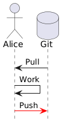
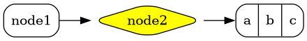

image::media/escher_knots.jpg[.r-stretch]A Demonstration
Do you see the arrows at the bottom right corner?
You can use them to navigate the slides. Or use your keyboard arrows.
Or Space to go forward, and Shift+Space to go back.
There are much more special keys for you to try:
ESC to get a slide overview
F to toggle fullscreen mode
? to see all the available commands. There are much more!
image::media/escher_knots.jpg[.r-stretch]results in: image::media/escher_knots.jpg[Seventies vibe,height="320px",data-preview-image="images/70s.jpg",data-preview-fit="contain"]
image::media/background.jpg[background, size=cover]results in:
image::media/surprise.gif[background, size=cover]results in:
[background-video="https://url.org/video.mp4",options="loop,muted"][plantuml]
....
database Git
actor Alice
Git -> Alice: Pull
Alice -> Alice: Work
Alice -[#red]> Git : Push
....results in:

....
[graphviz]
digraph foo {
rankdir=LR;
node [style=rounded]
node1 [shape=box]
node2 [fillcolor=yellow, style="rounded,filled", shape=diamond]
node3 [shape=record, label="{ a | b | c }"]
node1 -> node2 -> node3
}
....results in:

Sample Git Flow diagram done by Mermaid.Js
[mermaid]
%%{init: { 'theme': 'neutral', 'gitGraph': {'rotateCommitLabel': false}} }%%
gitGraph
commit id:"1"results in:
Failed to generate image: Could not find the 'mmdc' executable in PATH; add it to the PATH or specify its location using the 'mmdc' document attribute
%%{init: { 'logLevel': 'debug', 'theme': 'neutral', 'gitGraph': {'rotateCommitLabel': false}} }%%
gitGraph
commit id:"1"
commit id:"2"
commit id:"3"
branch feature
commit id:"4"
commit id:"5"
checkout main
commit id:"6"
commit id:"7"
cherry-pick id:"4"Edgar Allen Poe
Sheri S. Tepper
Bill Bryson
Edgar Allan Poe (/poʊ/; born Edgar Poe; January 19, 1809 – October 7, 1849) was an American writer, editor, and literary critic.
Kotlin
Java
Scala
Programming language for Android, mobile cross-platform and web development, server-side, native, and data science. Open source forever Github.
* I'm
* a
* Listresults in:
I’m
a
List
. Step 1
. Step 2
.. Step 2a
.. Step 2b
. Step 3results in:
Step 1
Step 2
Step 2a
Step 2b
Step 3
Press any key
And again
And once more
first term:: definition of first term
second term:: definition of second termresults in:
definition of first term
definition of second term
[source, clojure]
----
(def lazy-fib
(concat
[0 1]
((fn fibonacci [a b]
(lazy-cons (+ a b) (fibonacci b (+ a b)))) 0 1)))
----results in:
(def lazy-fib
(concat
[0 1]
((fn fibonacci [a b]
(lazy-cons (+ a b) (fibonacci b (+ a b)))) 0 1)))Classics: * bold *, _ italic _, ` monospace `.
Superscript and ~ Subscript ~.
[.small] to make text smaller.Plus (+) can
be used
to make linebreaks.
But this is still one paragraph!
[%header, cols=2*]
|===
|Character
|Seen in
|Donald Duck
|Mickey Mouse
|===results in:
| Character | Seen in |
|---|---|
Donald Duck | Mickey Mouse |
A person who never made a mistake never tried anything new.
MathJax formulas are also supported.
$ J(\theta_0,\theta_1) = \sum_{i=0} $
\( x = {-b \pm \sqrt{b^2-4ac} \over 2a} \)results in:
\(J(\theta_0,\theta_1)=\sum_{i=0}^{m}\)
Press 'S' to show speakers view in separate window.
There is extra info visible in that window!
Propose a pull request 😉
Many reveal.js parameters can be set as document attributes to change the behavior of the slideshow.
// Navigation mode: 'default', 'linear', 'grid'
:revealjs_navigationMode: linear
// Loop the presentation
:revealjs_loop: true
// Enable mouse wheel navigation
:revealjs_mouseWheel: true
// Auto-advance slides every 3 seconds
:revealjs_autoSlide: 3000
:revealjs_autoSlideStoppable: true
// Parallax background
:revealjs_parallaxBackgroundImage: https://example.com/bg.jpg
:revealjs_parallaxBackgroundSize: 2100px 1200px
:revealjs_parallaxBackgroundHorizontal: 200
:revealjs_parallaxBackgroundVertical: 50